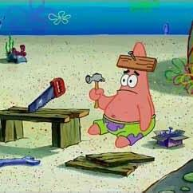

📅 01-May-2020
Article first published in Dev.to
In defence of daily stand-ups
I’ve seen lately a lot of hate towards dailies and I want to add my 2 cents on what I think is the real issue behind.
A common critique I’ve heard is that they are distractions and they are a waste of time.
Daily stand-ups, meetings that should last about 10 minutes, are a waste of time? I think we have a hint on what can be going on here.
I’ve seen and heard of dailies that take too long. My personal record is attending one that lasted over an hour, but the average seems to be around 20-30 minutes.
No wonder people think like that!
But how did we get here? Let’s remember what a daily should be:
- Less than 9 attendees
- Each person speaks for ~1 minute, saying:
- What did they do yesterday
- What will they do today
- If they need any help
The goal is to keep the individuals aware of the state and progress of the project and the rest of the team, and ask for / offer help if needed. Nothing more.
That wouldn’t even take 15 min on the worst cases, so what happened?
In my opinion, we lost our way. And they became nothing more than an opportunity to brag about how smart we are, explaining in detail how we implemented that new tricky feature, or how we fixed that elusive bug. And the sad truth is no one cares.
Without seeing the code and the appropriate context and references, no one can follow a complex (and incomplete) explanation, and people just stop paying attention, simply waiting for their turn to do the same.
That way, when everybody leaves the meeting (bored to death), no one really knows what the rest are doing and they feel (rightly so) that they just lost a valuable part of their day with nothing in return.
Dailies are useful, Agile methodologies are useful. But only if implemented properly (and if they’re actually appropriate for the specific project). They are mere tools. No one would complain that a screwdriver is a useless tool while holding it backwards (and/or trying to use it with a nail).

So let’s go back to the basics, and Keep It Simple (Stupid).